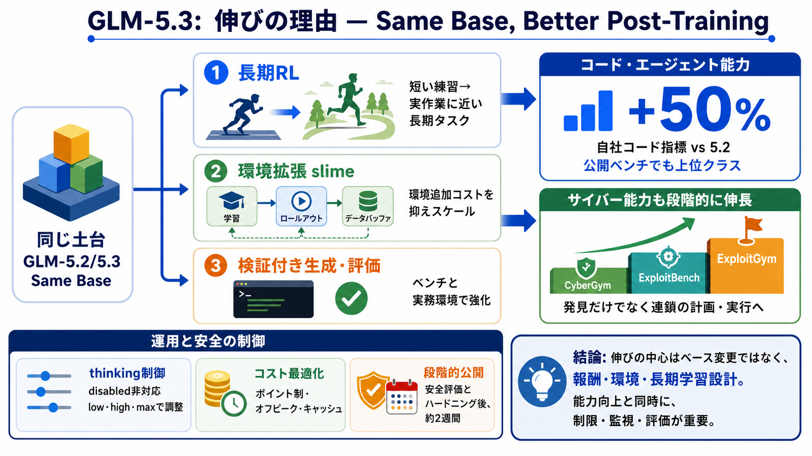

zai-org/GLM-5
year={2026}, eprint={2602.15763}, archivePrefix={arXiv}, primaryClass={cs.LG}, url={ }` [...] Reinforcement learning aim…

GLM-5.3: 伸びの理由
GLM-5.2と同じベースを保ちつつ、長期RLと環境拡張のポストトレーニングでコーディングとエージェント能力を伸ばした、という主張を整理します。
何が効いたか
ベースモデルは同一なのに、なぜ性能が変わるのかを「ポストトレーニング」「評価ベンチ」「運用制御」から読み解く必要があります。
読解前提：（ベース同一／Terminal Bench等の比較／長期タスク学習／隔離環境と対策）
同じ土台
GLM-5.3はGLM-5.2と同一のベースモデルで、差分は主にポストトレーニング側にある、と資料は明記しています。
短距離→長距離
短いコード練習ではなく、数日単位の「実作業に近い複数ステップ」を回せる環境に寄せることで、エージェント実務力が反映されやすくなると説明します。
コード指標
自社ベンチ相当（Z.ai Code Bench）でGLM-5.2比50%改善を掲げ、公開ベンチ（Terminal Bench 3.0等）でも上位クラス結果が示されています。
環境を増やす
学習・ロールアウト・データバッファを統合するオープンソース枠組み「slime」により、環境追加のコストを抑えてスケールできた、とされています。
悪用連鎖へ
脆弱性データと環境を混ぜた結果、局所的な識別だけでなく、exploitation（搾取）連鎖の上流〜下流まで計画して組み立てる能力が加速して伸びたと述べます。
段階で伸びる
CyberGymではGLM-5.2より上昇し、ExploitBench / ExploitGymでは改善幅がさらに大きくなる「段階が進むほど伸びが大きい」パターンが提示されています。
APIの制御点
GLM-5.3ではAPI上の「thinking（推論）」無効化が非対応になり、low/high/maxの3段階で制御する必要があるとされています。
運用設計
エージェント向けサービスでは、ポイント制、オフピーク割引、キャッシュ活用など、実利用条件が提示されており運用の導線が設計されています。
公開タイミング
重み公開はローンチから2週間後、安全評価とハードニング完了後に行う予定とされ、能力の高さに応じた段階的な責任が示唆されます。
読みどころ
GLM-5.3は「長期RL＋実務環境＋検証付き生成」でコーディングとエージェント能力を押し上げた一方、サイバー領域の伸長は悪用リスクも同時に高め得るため、運用・制限・監視まで含めた評価が要ります。
year={2026}, eprint={2602.15763}, archivePrefix={arXiv}, primaryClass={cs.LG}, url={ }` [...] Reinforcement learning aim…
Image 1 2026-06-16 · Research # GLM-5.2: Built for Long-Horizon Tasks Image 2Try it at Z.ai Image 3Call it at Z.ai I…
Image 1 2026-04-07 · Research # GLM-5.1: Towards Long-Horizon Tasks Image 2Call it at Z.ai Image 3Z.ai Coding Plan I…
Battle-tested by frontier model training: slime is the RL framework behind GLM-5.2, GLM-5.1, GLM-5, GLM-4.7, GLM-4.6, an…
Adversarial by nature - finding weaknesses, not demonstrating strengths Multi-step with real branching - not linear Q&A…